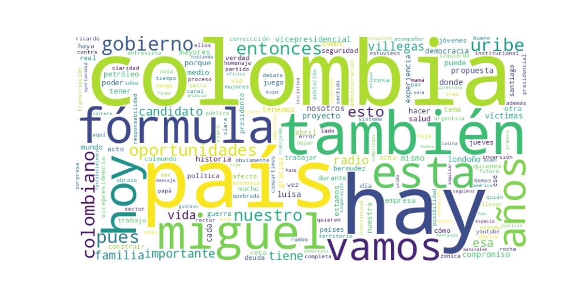

Seguidores: 664
Fecha del Análisis: 16 de abril de 2024 Analista: Asistente Especializado en Comunicación Política
1. Perfil de Comunicación: La candidata emplea un estilo de comunicación que combina elementos formales y personales, buscando proyectar una imagen de profesionalismo y cercanía. Utiliza un lenguaje predominantemente claro y accesible (popular), evitando tecnicismos excesivos para conectar con un público amplio. Sin embargo, en temas específicos como economía o políticas públicas, incorpora términos propios de la gestión administrativa y empresarial (ej. "facturación electrónica", "sistema productivo"), reflejando su perfil técnico. Su comunicación es deliberadamente cercana, apelando frecuentemente a experiencias personales (ser madre, su carrera) para humanizar su discurso y construir credibilidad desde la vivencia.
2. Temas Principales: 1. Seguridad y Orden Público: Lo aborda como la prioridad central, vinculándolo al fracaso del gobierno actual. Utiliza narrativas de confrontación contra grupos ilegales y promete una respuesta de "presencia real" del Estado. Ejemplo: "Donde hay control ilegal del territorio, hay abandono estatal. En nuestro gobierno vamos a llegar con presencia real, con fuerza pública... que el país vuelva a ser de los colombianos, no de los criminales". 2. Reactividad Económica y Gestión: Critica la situación económica actual ("economía que está absolutamente quebrada") y propone un modelo basado en eficiencia estatal, claridad normativa para la inversión y generación de oportunidades. Ejemplo: "Para tener atracción de inversión extranjera tienes que darle seguridad tanto física como legal y jurídica, y si las reglas son claras, la empresa invierte". 3. Salud y Deuda Pública: Enfoca el tema en la gestión técnica y la transparencia, planteándolo como un problema de administración que requiere diagnóstico preciso. Ejemplo: "Necesitamos conocer la deuda real del sistema para actuar con responsabilidad... sentarse con las entidades... para poder determinar cuál es esa real deuda". 4. Crítica al Gobierno Petro: Un tema transversal y recurrente. Califica su gestión como un fracaso en seguridad ("paz total fracasó"), economía y diálogo, presentándolo como la razón principal para un cambio de gobierno. Ejemplo: "Es la primera vez que tenemos un gobierno de izquierda... hoy estamos en riesgo de que este se quede... está en juego la democracia". 5. Poblaciones Específicas (Jóvenes, Mujeres, Adultos Mayores): Aborda estos temas con un enfoque propositivo de inclusión y oportunidades, ligándolos a programas con nombre propio ("Jóvenes para el futuro", "Colombia Plateada").
3. Tono y Sentimiento Dominante: El tono general es crítico y confrontacional hacia el gobierno actual, pero propositivo y esperanzador cuando habla del futuro bajo su fórmula. Hay una sensación de urgencia ("el país está en juego") combinada con confianza en un equipo preparado ("estamos listos para demostrar"). Utiliza un sentimiento de empatía dirigido a víctimas y familias, buscando conectar emocionalmente.
4. Palabras Clave de Poder: * "Una sola Colombia" / #PorUnaSolaColombia: Eslogan central que busca unificar y contraponerse a narrativas de división. * "Seguridad" / "Presencia real" / "Abandono estatal": Tríada conceptual para enmarcar el problema de orden público y su solución. * "Oportunidades (reales)": Palabra puente entre su discurso económico y social. * "Claridad" / "Transparencia": Apelan a la gestión técnica y la honestidad como antídotos a la corrupción y la deuda. * "Convicción": Usada para reforzar la seguridad y determinación personal y del equipo. * "Democracia (en juego)": Fórmula de alarma para movilizar al electorado contra la continuidad del gobierno actual.
5. Conclusión Estratégica: La estrategia de comunicación de Luisa Fernanda Villegas está diseñada para consolidar una base electoral de centro-derecha descontenta con el gobierno de Gustavo Petro, mientras busca ampliarla hacia votantes moderados valorando su perfil técnico y maternal. Habla a un electorado que prioriza la seguridad, la reactivación económica pragmática y el orden institucional. Su discurso busca evocar, principalmente, confianza (desde su experiencia empresarial y personal), urgencia (ante un "país en juego") y unidad (bajo el lema "Una sola Colombia"). Se posiciona como el rostro capacitado y sensible de una fórmula que ofrece un "rumbo distinto", marcado por la gestión eficiente y la firmeza, presentándose como la alternativa técnica y humana al "fracaso" percibido de la izquierda.
Reporte de Análisis Estratégico de Comunicación Política
1. Resumen del Patrón de Éxito: La fórmula de éxito de los videos se basa en una combinación poderosa de emoción y claridad confrontacional. La candidata estructura su mensaje desde una posición de testigo y víctima moral, conectando experiencias personales con una crítica directa y categórica al gobierno actual y al estado de la nación. No ofrece matices; construye un relato binario de fracaso presente versus esperanza futura, utilizando un lenguaje emotivo que apela al dolor, la resiliencia y el deber cívico, siempre enlazado a la figura del candidato principal (Miguel) como símbolo de un legado y un rumbo alternativo.
2. Tácticas de Comunicación Clave: * Contraste y Enmarcado de Crisis: La táctica central es definir una realidad actual de fracaso, abandono y riesgo extremo ("la paz total fracasó", "economía absolutamente quebrada", "está en juego la democracia"). Esto se contrasta constantemente con la promesa de un futuro de "presencia real", "orden" y "oportunidades" bajo su liderazgo. Se personifica el problema en el gobierno de Petro/la izquierda. * Puente Emocional-Personal: Utiliza anécdotas y roles personales (madre soltera, jefa de hogar, alumna agradecida) para humanizarse y generar identificación. Estas historias no son un fin en sí mismas, sino un puente para validar su autoridad moral y luego conectar con propuestas políticas concretas (programas para jóvenes, mujeres, adultos mayores). * Apelación a la Urgencia y al Miedo Controlado: Evoca emociones fuertes como el dolor por la violencia ("corazón lleno de dolor") y el miedo a la pérdida irreversible de la democracia y la economía. Sin embargo, canaliza este miedo hacia una solución concreta y esperanzadora: su fórmula electoral. No deja la emoción en el aire; la dirige hacia un llamado de rescate. * Claridad Discursiva y Repetición de Eslóganes: Emplea un lenguaje directo, con frases cortas y contundentes que se repiten como mantras ("donde hay control ilegal... hay abandono estatal", "una sola Colombia"). Esto facilita la memorización y el compartido en redes. Los llamados a la acción son más implícitos (votar por ellos) que explícitos, envueltos en la narrativa de "cambiar el rumbo".
3. Temas de Mayor Resonancia: 1. Seguridad y Orden Público: La crítica a la "paz total" y la denuncia de actos terroristas y control territorial ilegal son detonantes principales de engagement. 2. Defensa de la Democracia y la Economía: La narrativa de que la democracia y la economía están "en juego" o "quebradas" bajo el gobierno de izquierda genera alta interacción. 3. Crisis del Sistema de Salud: La deuda de la salud se presenta como un símbolo de la mala gestión y la opacidad del gobierno actual. 4. Reivindicación de las Víctimas: Posicionarse como la voz de las víctimas de la violencia contra la impunidad de los criminales es un tema emocionalmente potente.
4. Perfil de la Audiencia Implícita: El discurso apunta a una audiencia de centro-derecha desencantada y movilizable, así como a indecisos con alta sensibilidad a la inseguridad y el deterioro económico. El lenguaje es accesible pero con pinceladas de experiencia técnica (ej. facturación electrónica, inversión extranjera), lo que sugiere que también busca conectar con profesionales y clases medias preocupadas por la estabilidad. La reiterada mención a "valores", "familia" y "principios" refuerza este target. No es un discurso dirigido primariamente a jóvenes radicalizados o a la base más ideologizada, sino a quienes perciben una crisis y buscan una alternativa seria y con raíces (de ahí el énfasis en el legado de Miguel).
5. Conclusión Estratégica: La clave fundamental del poder de su discurso reside en su capacidad para encarnar una dualidad convincente: es a la vez víctima (de las circunstancias) y salvadora; es cercana (por su historia) y firme (en sus diagnósticos). Difumina la línea entre lo personal y lo político de manera funcional, haciendo que la propuesta política se sienta como una extensión natural de sus experiencias de vida y valores. Esto la diferencia del discurso político tradicional, que suele separar la anécdota personal del programa de gobierno. Aquí, lo personal valida lo político. Su potencia radica en que no solo ataca al rival, sino que construye una identidad propia sólida y emocionalmente resonante que sirve de antídoto a todo lo que critica. Es una comunicación de guerra cultural empaquetada en relatos de vida y gestión.

Caption: Uno de los principales retos de ser candidata a la vicepresidencia es enfrentar estos espacios. Pero cuando se trata de defender un plan de gobierno en el que creemos, deja de ser un reto: es convicción, es propósito y también es por Miguel. Por eso hablamos claro: La paz total fracasó y le ha costado demasiado al país. Y en salud, no hay soluciones sin claridad: necesitamos conocer la deuda real del sistema para actuar con responsabilidad. #miguelpresidente #porunasolacolombia
Likes: 89 | Comentarios: 3 | Reproducciones: 958
Ver en InstagramCaption: Lo que ocurrió en la vía Panamericana, en el Cauca, fue un acto terrorista planeado, ejecutado contra ciudadanos indefensos. A las familias de las víctimas, mi solidaridad. Pero también algo importante: claridad. Donde hay control ilegal del territorio, hay abandono estatal. #MiguelPresidente #PorUnaSolaColombia
Likes: 47 | Comentarios: 6 | Reproducciones: 551
Ver en InstagramCaption: Hoy abrazo a Miguel, a su familia y a cada historia que no puede ser olvidada. Colombia debe estar del lado de las víctimas. Este día no puede ser un acto ser un acto simbólico más. Tiene que ser un compromiso real, compromiso con la verdad, compromiso con la justicia
Likes: 75 | Comentarios: 1 | Reproducciones: 891
Ver en Instagram